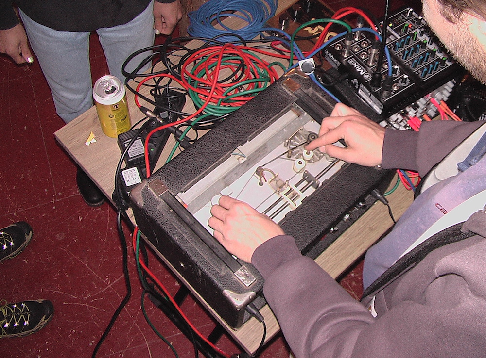

|
Tobias Jansen Köln & Berlin, DE cgnwizard@gmail.com |
 |
|
Tobias Jansen, some people call him TBZ, is a musician, sound engineer, and dj based in Published solo work dates back to 2010 and has more recently been released on chart-topping record labels like Brew, R=A, Tax Free, Stenze Quo and his private imprint. As a collaborator, he has taken on various roles, serving as the guiding force behind (con)fusion music ensemble Montel Palmer and previously as a scratch-sidekick in Devon Rexi. Other projects include exploring high-voltage machine grime with Robert Bergman as ♨, skeleton-dub science as GRRRR with Max Graef, and the hip hop duo La Rat with Goya van der Heijden. Together with James Pants, he developed an open-source polyrhythmic drum machine named E-Drums. Live performances have taken place across Europe, with appearances at venues and festivals such as Meakusma, Moers Festival, Braille Satellite, Aktionshaus, Open Ground, OCCII, Salon Des Amateurs, and many more - regulary sharing stage with performers like Wilted Woman, Yosa Peit, Nicolini, Sebastian von der Heide, and Malcolm Mooney. Expect an amalgam of styles and tempi imbued with an outsider B-Boy mentality. He has broadcasted on radio stations including Dublab, NTS, Red Light, and Noods. Between 2009 and 2019, he hosted various dj residencies in Köln, predominantly at now-extinct Stecken and Acephale. Under the cgnwizard moniker, he has mixed, mastered, and supervised numerous records for labels such as Planet Rescue, South Of North, Tax Free, Termina, and Acetone. Professionally he also served as a core team member and radio engineer of RBMA's flagship events in Toyko, Paris, Montreal, New York, and Berlin. Moreover, he enjoys hard-boiled eggs and is enthusiastic about computer science, reed instruments and cheap (Jamaican) vinyl. Shows / Discogs / Bandcamp / Instagram / Soundcloud |